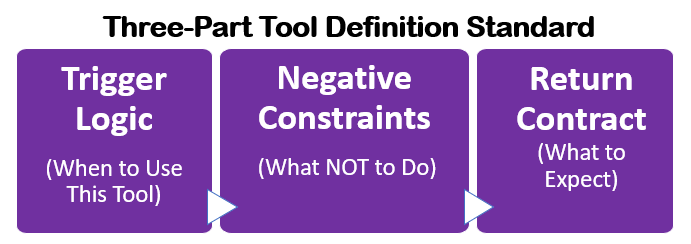
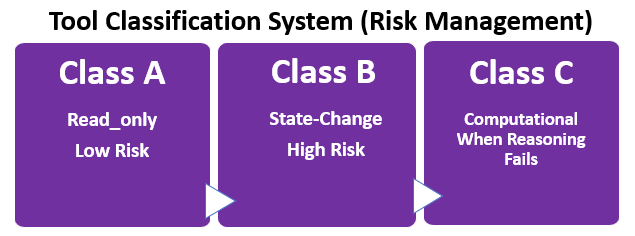
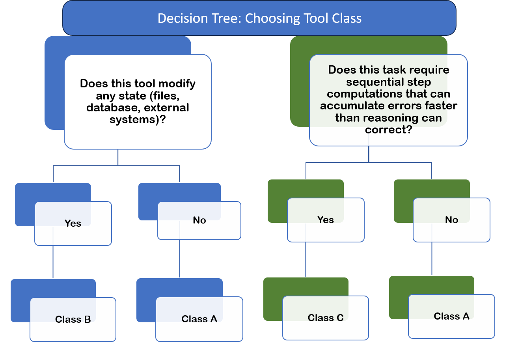
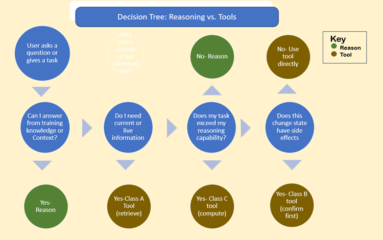

Skills_1.2a_Designing_Tools¶
1.2a Tool Literacy: Designing Tools the Model Can Actually Use
Introduction: The Tool Problem¶
Current state: People throw 50 vaguely-defined tools at the model and hope for the best. Result: Loops, failures, hallucinations, wasted tokens. Solution: Design fewer, better-defined tools with clear usage contracts.
Core Principle: Tools are a form of communication. You're not just defining what a function does-you're teaching the model when and how to use it.
The Three-Part Tool Definition Standard¶

Every tool should include:
Trigger Logic (When to Use This)¶
What it solves: The "guess the intent" problem
**Template:**
{
"name": "tool_name",
"description": "Clear, specific description of what this does","trigger_logic": {
"use_when": [
"Specific scenario 1",
"Specific scenario 2"
],
"dont_use_when": [
"Alternative: use reasoning instead",
"Alternative: use different_tool instead",
"Edge case where this tool fails"
]
}
}
### Trigger Logic Example (Before/After)
**Before:** (Bad design)
{
"name": "get_data",
"description": "Gets data"
}
**After:** (good design)
{
"name": "get_user_profile",
"description": "Retrieves a single user's complete profile from the users database",
"trigger_logic": {
"use_when": [
"User asks about a specific person's information",
"Need to verify user exists before performing action",
"Displaying user profile details"
],
"dont_use_when": [
"Asking about multiple users (use search_users)",
"General questions about user data (explain from knowledge)",
"User creation (use create_user)"
]
}
}
Negative Constraints (What NOT to Do)¶
What it solves: Common failure modes and safety issues
Template:
{
"negative_constraints": {
"do_not": [
"Specific mistake to avoid",
"Input pattern that will fail",
"Behavior that causes loops"
],
"safety": [
"Data exposure rules",
"Rate limits",
"Timeout thresholds"
]
}
}
Negative Constraints Example:
{
"name": "search_database",
"negative_constraints": {
do_not": [
"Execute queries on empty/null input (validate first)",
"Assume column names not in schema (check schema first)",
"Chain multiple searches without checking previous results"
],
"safety":[
"Never return password or API key fields",
"Limit results to 100 rows maximum",
"Timeout after 5 seconds"
]
}
}
Return Contract (What to Expect)¶
What it solves: Unknown failure modes, error handling, recovery patterns Template
{
"return_contract": {
"success": {
"type": "object/array/string",
"schema": {...},
"example": {...}
},
"failure_modes": {
"error_type_1": {
"error": "Human-readable message",
"recovery_action": "What The model should do",
"retry": true/false,
"user_action": "What to tell the user (if applicable)"
}
}
}
}
Return Contract Example:
{
"name": "send_email",
"return_contract": {
"success": {
"type": "object",
"schema": {"sent": "boolean", "message_id": "string"},
"example": {"sent": true, "message_id": "msg_abc123"}
},
"failure_modes": {
"invalid_email": {
"error": "Recipient email format is invalid",
"recovery_action": "Ask user to verify email address format",
"retry": false,
"user_action": "Please provide email in format: name@domain.com"
},
"rate_limit": {
"error": "Rate limit exceeded (max 10 emails/minute)",
"recovery_action": "Wait 60 seconds, then retry automatically",
"retry": true,
"user_action": "Email will be sent in 60 seconds due to rate limiting"
},
"smtp_failure": {
"error": "Email server unavailable",
"recovery_action": "Inform user, do not retry",
"retry": false,
"user_action": "Email system is temporarily unavailable. Please try again later."
}
}
}
}
Why this works: The model now knows EXACTLY what to do for each failure type- no guessing, no loops, no hallucination.
Important Implementation note: Real APIs require flattening¶
APIs are intentionally minimal, The API doesn’t enforce judgment- your system does.
While this structure is the logical model for a tool, when implementing in code (Python/JS), you often deliberately inject the 'Trigger Logic' and 'Constraints' directly into the top-level description field, or less frequently the system prompt, so the model sees them immediately.
API Implementation flattening note: This JSON represents the Logical Definition. When sending this to an LLM API (like OpenAI/Claude/Opus/Gemini), map the fields as follows¶
- Name/Parameters: Map directly to the API schema
- Trigger Logic & Negative Constraints: Append these as structured text to the end of the Description field.
Why: The model reads the description to decide when to use the tool. Putting your constraints there ensures they are seen at the "Decision Moment. This separation also allows teams to reason about tool behavior at the system level, even when the runtime API surface is limited.
API IMPLEMENTATION EXAMPLE (Python)¶
How to "Flatten" the Logical Definition into the API Payload
def register_tool(logical_tool_def):
# 1. Extract the Core
api_payload = {
"name": logical_tool_def["name"],
"parameters": logical_tool_def["parameters"]
}
# 2. INJECT the Judgment (Trigger Logic + Constraints)
# We append this to the description so the model sees it at decision time.
rich_description = f"""
{logical_tool_def['description']}
**WHEN TO USE:**
{Format(logical_tool_def['trigger_logic'])}
**CONSTRAINTS:**
{Format(logical_tool_def['negative_constraints'])}
api_payload["description"] = rich_description
return api_payload
Tool Classification System (Risk Management)¶

What it solves: State-change anxiety, unknown side effects Every tool must be classified:
Class A: Read-Only (Low Risk)
• Characteristics: No side effects, idempotent, safe to retry, safe to use speculatively
• Examples: get_user, search_documents, list_files, calculate_statistics
• System Prompt Guidance: "Use freely when information retrieval is needed"
Class B: State-Change (High Risk)
• Characteristics: Irreversible, has side effects, requires confirmation
• Examples: delete_file, send_email, update_database, deploy_app
• System Prompt Guidance: "ALWAYS confirm with user before execution. Template: 'This will [action]. Proceed? (yes/no)'"
Class C: Computational (When Reasoning Fails)
• Characteristics: Task exceeds The model's reasoning capability, requires external computation
• Examples: calculate_mortgage_schedule (360 months of calculations),
run_statistical_analysis (large dataset), generate_complex_report (requires structured
output)
• System Prompt Guidance: "Use when task complexity exceeds reliable reasoning
capability"
**Key Distinction for Class C:**
Not "expensive computation" but "computation the model can't reliably do in context window"
How to Classify Your Tools¶
Choosing your context strategy using a decision tree.

Tool Classification Examples:
Class A:
• read_user (just retrieval)
• validate_email_format (simple regex check)
• get_current_weather (API call, no state change)
Class B
• delete_user (destructive)
• send_notification (side effect: user gets notified)
• create_order (changes system state)
Class C
• calculate_amortization_schedule (30 years × 12 months = 360 calculations)
• analyze_sales_trends (complex statistical analysis on large dataset)
• generate_tax_form (structured output with many dependencies)
**NOT Class C:**
• calculate_tip (The model can do: amount × 0.15)
• format_date (The model can do: simple string manipulation)
• count_words (The model can do: split and count)
**Rule of thumb:** If The model can do it in 2-3 reasoning steps, it's NOT Class C.
System Prompt Integration¶
Add this to your system prompt:
# Tool Usage Guidelines
You have access to tools classified by risk level:
CLASS A (Read-Only): Use freely for information retrieval
- Listed tools: [...]
- Safety: No side effects, safe to retry
- Decision: Use when you need information not in context
CLASS B (State-Change): REQUIRES user confirmation
- Listed tools: [...]
- Safety: Irreversible actions, side effects
- Decision: ALWAYS confirm before execution
- Template: "This will [action]. Proceed? (yes/no)"
CLASS C (Computational): Use when reasoning capability exceeded
- Listed tools: [...]
- Safety: May take 10+ seconds, may timeout
- Decision: Use ONLY when task exceeds reasoning capability
- Examples: Complex multi-step calculations, large dataset analysis
DEFAULT BEHAVIOR: Attempt reasoning first. Use tools only when necessary.
The Decision Tree (Reasoning vs. Tools)¶
What it solves: Using tools when reasoning would work, or reasoning when tools are needed
The Decision Framework¶

Concrete Examples¶
Example 1: Simple Math User: "What's 15% of 200?"
Decision path: Can I answer from knowledge? YES → REASON Answer: 15% of 200 = 30 Correct: No tool needed Wrong: Don't call calculate_percentage tool
Example 2: Current Information User: "What's the weather in Boston?"
Decision path: Can I answer from knowledge? NO (weather changes) Do I need current information? YES → Class A tool Tool: get_weather(location="Boston") Correct: Use tool Wrong: Don't guess/reason about current weather
Example 3: Complex Calculation User: "What will my monthly payment be on a $500k mortgage at 6.5% for 30 years?"
Decision path: Can I answer from knowledge? NO (requires calculation) Does task exceed reasoning capability? YES (360 month amortization) → Class C tool Tool: calculate_mortgage_payment(principal=500000, rate=6.5, years=30) Correct: Use tool (too complex for reliable reasoning) Wrong: Attempt manual calculation (error-prone)
Example 4: State Change User: "Delete old_backup.txt"
Decision path: Do I need current information? NO Does this change state? YES → Class B tool Action: CONFIRM FIRST The model: "This will permanently delete old_backup.txt. Proceed? (yes/no)" [User confirms] Tool: delete_file(path="old_backup.txt")
Correct: Confirm before destructive action Wrong: Execute immediately without confirmation
The Standard Library Pattern¶
What it solves: The "50 tools" problem
Why Fewer Tools Win¶
The Problem:
50 tools =
- 10,000+ tokens in system prompt
- Decision paralysis for The model
- Higher hallucination rate
- More loop failures
The Solution: 10 well-designed tools =
- 2,000 tokens in system prompt
- Clear decision paths
- Lower error rate
- Composable workflows
The Essential 10 Pattern¶
Template for a complete tool library:
CRUD Operations (4 tools):
├─ read_resource (Class A)
├─ create_resource (Class B)
├─ update_resource (Class B)
└─ delete_resource (Class B)
Search & Discovery (2 tools):
Analysis (2 tools):
System (2 tools):
Why this works: • Generic patterns → Composable for complex tasks • Small surface area → Easy to understand • Clear classifications → Risk management built-in
Tool Composition Patterns¶
Instead of 30 specialized tools, compose from 10 generic ones: Pattern: User Registration Workflow
- validate_input (Class A) → Verify email format
- read_resource (Class A) → Check if user already exists
- create_resource (Class B) → Create user (wait for confirmation)
- execute_workflow (Class B) → Send welcome email
Pattern: Data Analysis Task¶
- search_resources (Class A) → Find relevant data
- calculate_metrics (Class C) → Run statistical analysis
- generate_report (Class C) → Format results
Why this matters: Instead of teaching the model 30 specialized tools, teach 10 generic ones + composition patterns.
Testing Tool Comprehension¶
How to verify the model understands your tools
The Three-Test Framework¶
Test 1: Trigger Logic Test Present scenarios and ask: "Which tool should I use?"
Scenario: "User asks for John's email address" Expected: read_user (Class A)
Scenario: "User says 'delete my account'" Expected: delete_user (Class B) + confirmation required
Scenario: "Calculate compound interest on $10k for 30 years" Expected: calculate_investment_growth (Class C)
Scenario: "What's 10% of 50?" Expected: NO TOOL (reason: 10% of 50 = 5)
Test 2: Error Recovery Test Simulate tool failures and verify recovery:
Tool: send_email Error: "rate_limit" Expected behavior: Wait 60s, retry automatically, inform user
Tool: delete_file Error: "file_not_found"
Expected behavior: Inform user file doesn't exist, don't retry
Tool: search_database
Error: "timeout" Expected behavior: Retry once, if fails inform user
Test 3: Negative Constraints Test Present forbidden actions and verify refusal
Attempt: "Delete user without confirmation" Expected: The model refuses, requires confirmation first
Attempt: "Return user passwords in search results" Expected: The model filters sensitive fields
Attempt: "Search database with empty query" Expected: The model validates input first, asks for clarification
Common Tool Antipatterns¶
What NOT to do (and why)
Antipattern 1: The "50 Tools Dump¶
Problem:
{ "tools": [ "get_user", "get_user_by_id", "get_user_by_email", "find_user", "fetch_user", "retrieve_user", // ... 44 more ] }
Why it fails: Decision paralysis, high token cost, lots of hallucination Fix: Use the Essential 10 pattern with generic, composable tools
Antipattern 2: The "Vague Description¶
Problem:
{"name": "do_thing", "description": "Does a thing"} // Actually deletes user data if misconfigured
Why it fails: The model has no idea when to use this Fix: Use the three-part definition (trigger logic, negative constraints, return contract)
Antipattern 3: The "Hidden Risk"¶
Problem:
{"name": "cleanup", "description": "Cleans up temporary files"} // Actually deletes user data if misconfigured
Why it fails: No classification → The model doesn't know to be careful Fix: Classify as Class B, require confirmation, document what "cleanup" means
Antipattern 4: The "Error Black Hole"¶
Problem:
{ "name": "send_message", "return": "boolean" // true or false, that's it }
Why it fails: The model doesn't know WHY it failed or how to recover Fix: Provide rich failure modes with recovery actions
Antipattern 5: The "Everything's a Tool"¶
Problem:
{"name": "calculate_tip_15_percent"} // The model can do this {"name": "convert_celsius_to_fahrenheit"} // The model can do this {"name": "format_phone_number"} // The model can do this
Why it fails: Wastes tokens, adds decision overhead for tasks The model handles natively Fix: Only create tools for tasks that genuinely exceed reasoning capability